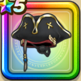

キャプテンハット
攻略班 7.5点 / 水系への耐性+5%物質系への耐性+5%【海賊】斬撃・体技耐性+1%水系への耐性+5%物質系への耐性+5%【海賊】スキルの斬撃ダメージ+1%バギ属性斬撃・体技ダメージ+5%
くわしい特徴
【レベル別習得スキル】 Lv1水系への耐性+5% Lv8すばやさ+5 Lv10物質系への耐性+5% Lv12【海賊】スキルの斬撃ダメージ+1% Lv15【海賊】斬撃・体技耐性+1% Lv18バギ属性斬撃・体技ダメージ+5% Lv20水系への耐性+5% Lv20【海賊】守備力+5 Lv23守備力+7 Lv25物質系への耐性+5% 【限界突破スキル】 1凸攻撃力+5 2凸すばやさ+7 3凸守備力+5 4凸さいだいHP+10